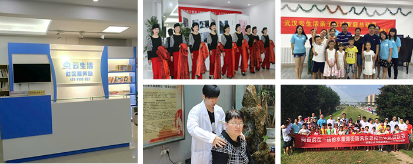

云生活志愿服务站
云生活志愿服务站·茶港站
2016年6月4日，云生活志愿服务站在武昌区茶港社区正式开站，武昌区委常委宣传部部长李蓉，区委宣传部副部长、区文明办主任肖永高，水果湖街党工委书记黄丰宙等领导莅临启动仪式。
社区作为城市的重要组成部分，是城市智慧落地的触点，是城市管理、政务服务和市场服务的载体，是连接政府与群众的桥梁。云生活志愿服务站通过社区撬动智慧文明城市建设，促进城市精神文明建设的常态化、数据化、制度化。
在民生互动层面，社区服务站将提供志愿服务、教育服务、亲子活动等丰富多彩内容板块，打造集公益、教育、社交为一体的社区综合服务平台。
在共建共享层面，居民不仅可以通过云生活参与社区活动，还能发起活动获得收益，从消费者变为闲置资源（时间、技能）的分享者，实现“社区人服务社区人”。
目前，围绕云生活志愿服务站，一系列精彩纷呈的活动已经在茶港社区展开，亲子烘焙、3D拼图大赛、亲子运动会、国手乒乓班、国学大讲堂等活动，丰富了居民精神文化生活、带活了社区的氛围，渐渐树立起一个新型的“互联网+”和谐社区新形象。